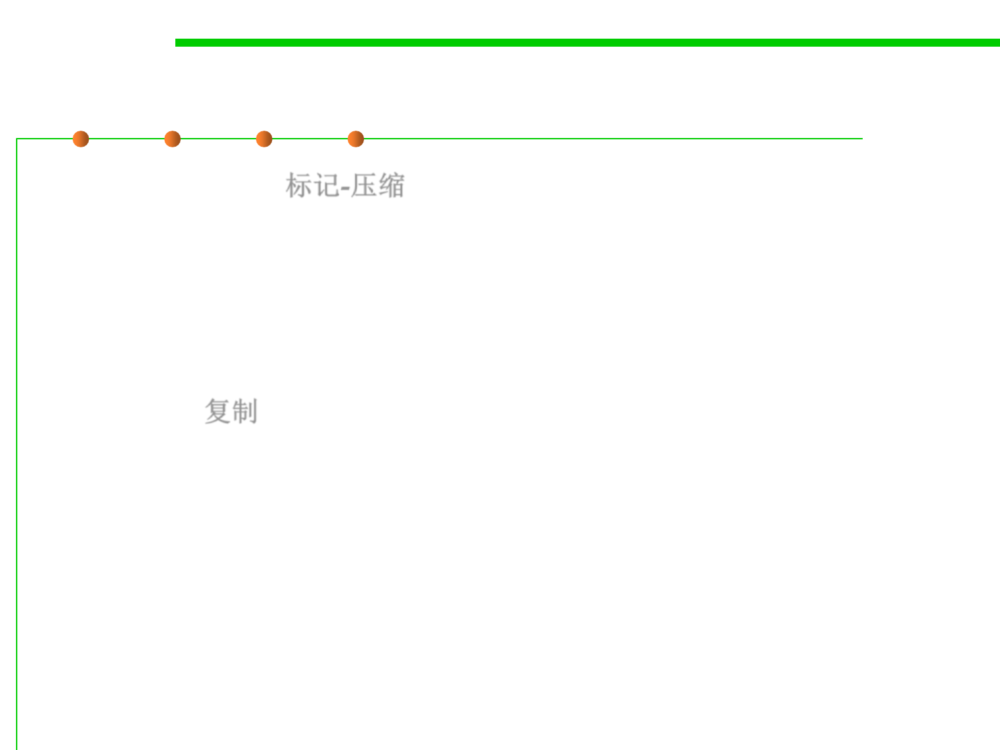

8.1 Metrics, Principles, and Methods of Construction for Performance
The basic algorithms of GC
▪ Mark-Compact: 标记-压缩
– Put notes on objects you need.
– Move anything with a note on it to the back of the garage.
– Burn everything at the front of the garage (it’s all dead).
▪ Copying: 复制
– Move objects you need to a new garage.
– Then recursively move anything needed by an object in the new garage.
– Afterwards, burn down the old garage (any objects in it are dead)!